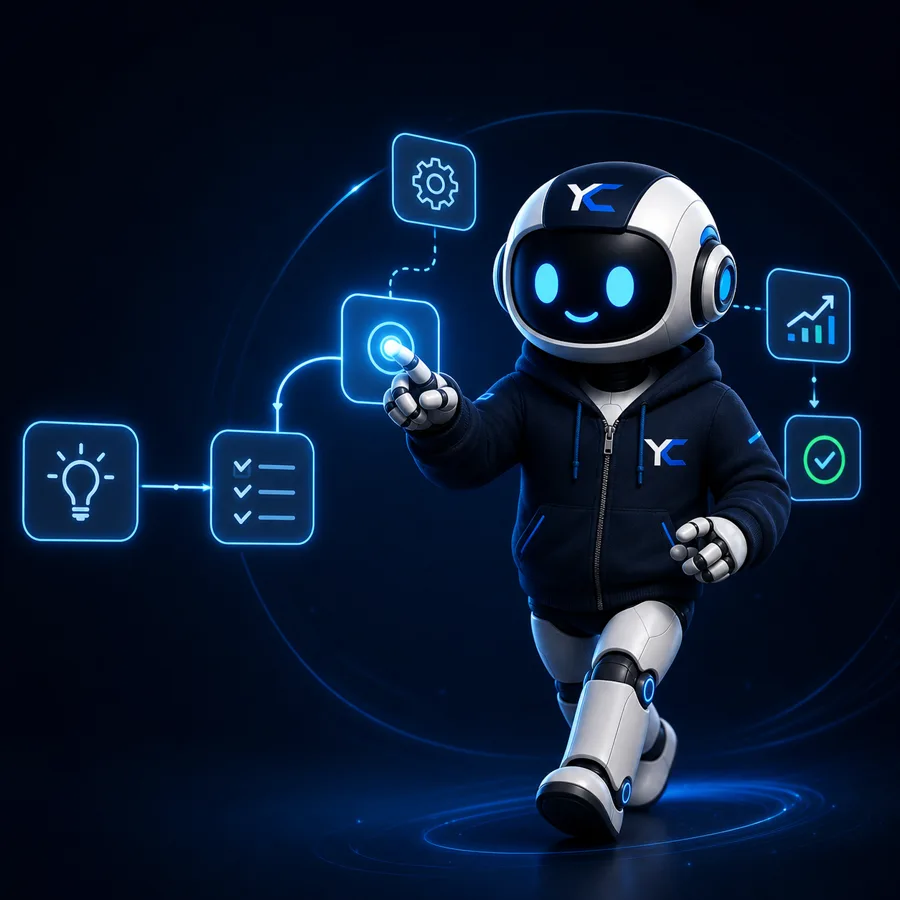

YC Systems LLC · Software operativo
Software operativo para empresas que necesitan control y crecimiento
Diseñamos productos SaaS, sistemas internos, CRM, dashboards y automatizaciones para convertir operaciones dispersas en flujos claros y medibles.
Producto propio · implementación por fases · soporte continuo

Elige tu ruta
Empieza por el resultado que tu negocio necesita
No necesitas llegar con una especificación técnica. Elige el punto de partida más cercano y construimos la ruta contigo.
Explora plataformas enfocadas en operaciones específicas y conoce su disponibilidad.
02Necesito software para mi operaciónCRM, portal, dashboard, automatización o sistema interno diseñado por fases.
03Necesito definir el primer pasoSolicita un diagnóstico para ordenar problema, alcance, prioridad y siguiente decisión.
Productos
Software propio construido alrededor de operaciones reales
Cada producto comunica con precisión su alcance y estado actual.

CleanLoop
Operación de lavandería en una sola plataformaPedidos, clientes, recogidas, entregas, rutas y pagos conectados en un flujo operativo claro.
Conocer CleanLoop
SOC
Visibilidad comercial para equipos que necesitan controlPipeline, actividad, indicadores y seguimiento ejecutivo reunidos en un centro operativo.
Conocer SOC
BrokerControl
CRM inmobiliario para ordenar la operación comercialProspectos, propiedades, reservas, documentos, agenda y comisiones dentro de un mismo flujo.
Conocer BrokerControl
CreditPilot
Gestión guiada para equipos de reparación de créditoUna línea de producto en desarrollo para casos, documentos, cartas y seguimiento de clientes.
Conocer CreditPilotNexus
Una capa de inteligencia que ayuda a observar, decidir y mejorar
Nexus representa cómo YC Systems conecta contexto, flujo de trabajo y decisiones dentro de sus productos.

Casos
Ejecución visible en negocios reales
Una muestra de experiencias publicadas para comercio, servicios, bienes raíces y presencia corporativa.
 Comercio electrónico
Comercio electrónicoGhostWear
Catálogo, carrito y pedidos conectados a WhatsApp para convertir visitas en conversaciones de venta.
Ver sitio publicado Bienes raíces
Bienes raícesAntony Real Estate
Presencia comercial enfocada en confianza, captación y contacto directo con compradores.
Ver sitio publicado Sitio corporativo
Sitio corporativoLPS Company
Base digital para presentar la empresa, sus marcas y una propuesta comercial coherente.
Ver sitio publicadoSiguiente paso
Convierte tu operación en un sistema claro
Cuéntanos qué necesitas controlar, medir o automatizar y recibe una ruta inicial con alcance y prioridades.